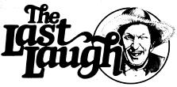

"The small town, I came from achieved zero population growth a long time ago. Every time a baby was born some guy left loom!"
Sam Levenson
When I was a boy I was told anybody could become president . . . I'm beginning to believe it! "
Clarence Darrow
"A government that robs Peter to pay Paul can, always count upon the support of Paul. "
George Bernard Shaw
Well sir, the changeover 'twixt one year an' the next seems to occasion all manner of goin's on . . . from one end of this land to t'other. An' you kin jist bet thet the ol' reprobates who toast their galoshes on the Plumtree Crossin' Gen'ral Store's potbelly stove ain't no exception to the rule!
Why, in point of fact, Young Billy Parsons set the whole pack of 'em off on a round of foolishness along about the first week in December. It seems the lad approached the gathered worthies one day in what appeared to be a mood of high seriousness.
"If it ain't young Parsons," Ott Bartlett spoke up by way of greetin' the striplin'. "Boy, you look 'bout as pleased with yerself as a first-time broody hen . . . which-to my way of thinkin' at least-jist ain't right in a sprout of yer tender years."
Billy didn't pay the banter no heed, howev'r. Instead-much to the surprise of the old fellers, who'd expected him to at least trip over his tongue a time er two whilst searchin' fer a snappy reply-he jist grabbed hisself a chair, leaned back, set his boots to sizzlin' agin' the stove, an' made a pronouncement:
"My friends, you're lookin' at a new man! "
"What'd you do with the old one?" Purvis Jacobs wanted to know. "He weren't hardly used yet! "
"I mean t'say," young Parsons shot right back, "thet I'm turnip' over a new leaf. As of January the first, I plan to lay offer drinkin', lyin', an' loafin'. In short, I aim to hunker down an' make somethin' of myself!"
"An' what, pray tell, has inspired yer righteous course of action?" Lafe Higgins wanted to know.
"Well, I'll tell you," says Billy, lookin' near as happy as a worm wrigglin' in loose dirt, "I been courtin' Mary Ellen Dickie-from over to Lick Skillet-an' I figger my New Year's resylution jist might be the thing thet'll lead me 'n' her all the way to the altar! "
Now as you kin imagine, the very subject of matrimony -'specially matrimony spiced with a liberal dose of personal reform-were a reg'lar call to arms fer them orn'ry ol' coots . . . an' they didn't waste a lick of time in draggin' out the heavy artillery, neither!
"Did I ev'r tell you 'bout the time my Uncle Estes up an' got hisself hitched?" Ott asked the gatherin'. To a man they shook they heads in the negytive, an' the of boy begun to hold forth . . . after takin' a slug of Purvis Jacobs's best memory enhancer, an' handin' the demijohn over to Young Billy (who did look at the jug a mite longin'ly, but passed it on untasted nonetheless).
"OI' Estes," Ott went on, "he was a right sociable human bein'. Why, whenev'r thet man got his face stuck in a fruit jar of corn squeezin's er dandylion wine, he'd jist keep it there till paralysis set in! He were a storyteller, too. Now, I admit thet he did adopt an occasional fact, but mostwise he jist found the truth too small fer his likin'.
"An' lazy? Estes were so lethargic thet his friends found it necessary to encourage him every onee't in a while jist to keep the man breathin' ! Yes sir, he were one hell of a good feller . . . leastwise till he ran inter Miss Emma Sue Wheeler."
At thet point in his narrytive, Ott paused fer another swaller (the jug havin' come round agin). An', once more, he passed the bottle on to Young Billy. Now the lad was right caught up in Ott's story, so he went ahead an' took a good half-swaller (afore he realized what he was about) . . . then blushed an' handed the jug to Newt like it were fit to burn his hand.
"But Emma Sue, she was purty as a Sunday spent down by the river, an' when she let it be known (in a ladylike manner, o' course) thet she weren't averse to Estes's company, the poor feller-who were so ugly his mother usta have to borrow a baby to take to church-went about three bricks shy of a full load. He took to attendin' temp'rance meetin's, dressin' up in the kinder clothes that won't hold up to three straight days of wear, trimmin' an' sculptin' his foot-long beard (what he were inordinately proud of), an' gen'rally turnin' his back on the life he'd ledwith a good bit of enthusyasm, I might add-a few days previous.
"The lady were plumb taken with the changes she saw in thet man, too . . . so by an' by they run off (seein' as Emma's kin didn't have no use fer Estes, reformed er no) an' got married. Now, my uncle's connivin' bach'lor companions felt a mite cheated by the turn of events-seem' as how they hadn't had a chance to properly badger ol' Estes about his loss of freedom afore it happened-an' they hornswoggled the feller inta attendin' a post nuptial bach'lor party immediately upon his return from the marryin'."
Now as the tale progressed, ol' Ott-on reg'lar occasions-would pause to wet his whistle. . . always passin' the jug to Billy immediately thereafter. An' following about his third inadvertent sip, young Parsons announced to the gatherin' thet-since he were soon to be sayin' goodbye to his happy-go-lucky single days-he figured a taste er two wouldn't kill him, neither. In point of fact, howev'r, the rest of the boys was makin' sartin thet the demijohn ended up in Billy's hands about twice as often as the normal course of rotation woulda called fer.
"At enny rate," Ott resumed his tale, wipin' his lips on his sleeve, "Uncle Estes soon got caught up in the spirit of the party . . . an' come the wee hours of the mornin', his cronies dumped him off on his doorstep, set up a poundin' to wake the new bride, an' then took outa there fast enough to strike fire off the wind.
"Emma answered the door, an' there lay Estes . . . sprawled like a split hay bale an' snorin' fit to call hogs. Now my aunt weren't a hard woman by nature, but havin' to drag a good two hundred pounds of ossified husband upstairs on her weddin' night kinder unloosed the mean in her. Once she got ol' Estes safely onta the bedroom floor, she fetched out her sewin' shears an' cut his prized beard clean off!
"Come daylight, Estes woke up an'-peerin' out from under the blue-blazin' pain of the mornin' after-looked at his new wife all tucked up in the bed sheets. The events of the precedin' day had jist about worked they way clear in his mind, when he put a hand up to his chin to think . . . an' his eyes opened up in a look of pure horror. Estes set there an' let the whole thing sink in fer a while-first rubbin' his chin, then lookin' at the slumberin' lady, then strokin' his face agin-afore he ran to the winder, threw it open, and begun screamin' fer anyone who might hear him:
" 'Get thet goldanged preacher back here. I'll be dipped iffen he hasn't up an' married her to the wrong man!' "
All the fellers had a laugh over that one, an' even Young Billy were able to muster a giggle er two in response . . . though his chuckles was a bit on the weak side.
"I don't mean to speak outa turn, Master Parsons," cackled ol' Newt Blanchard, "but would I be right in assumin' thet yer resylutions ain't quite as resylute as they formerly was?"
"I don't know thet I'd say so," replied Billy, puttin' ev'ry bit of sobriety thet he could muster inter his voice. "I am, howev'r, givin' the matter some careful considyration."
"Well, iffen thet's the case," Newt responded, "you jist settle yerself back an' have a celybrate . . . 'cause you ain't half cured yet, an' I've got a story thet's b ound to do the job! "
"No one can make you feel inferior without your consent."
Eleanor Roosevelt
"The real purpose of books is to trap the mind into doing its own thinking. "
Christopher Money
The eyes of other people are the eyes that ruin us. If all but myself were blind, I should want neither fine clothes, fine houses, nor fine furniture. "
Benjamin Franklin
|
 |
|
|